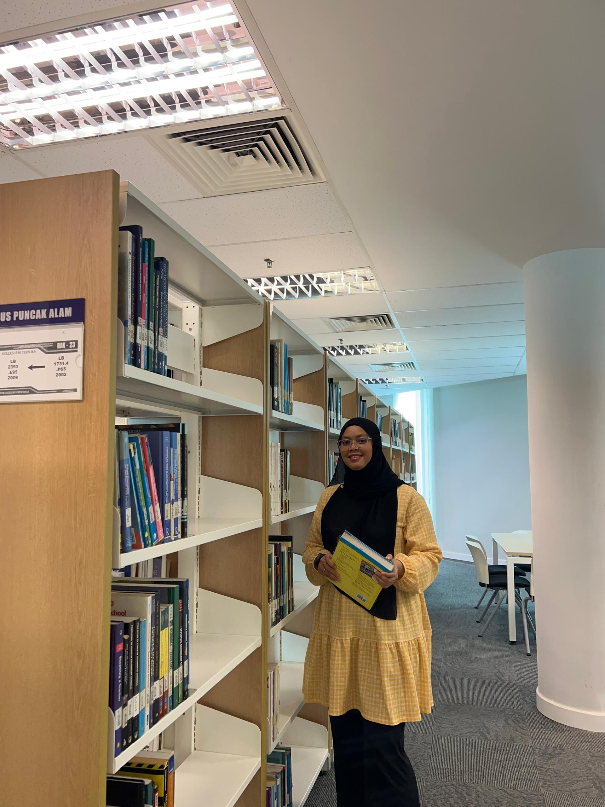

Shadatul Yasmin completed her secondary education at Sekolah Menengah Kebangsaan Subang located in Kampung Melayu Subang, where she obtained her Sijil Pelajaran Malaysia (SPM) with a result of 1A, 4B, 2C, 1D, and 1E.
She is currently pursuing a Diploma in Information Management as a part-time student at Universiti Teknologi MARA (UiTM), Puncak Perdana while working full-time in the oil and gas industry.
She has consistently demonstrated strong academic performance and currently holds a CGPA of 3.64. Throughout her studies, she has been awarded the Dean's List Award four times in recognition of her academic excellence.
| No. | Year | Institution | Qualification | Achievement |
|---|---|---|---|---|
| 2011 | Sekolah Menengah Kebangsaan Subang | Sijil Pelajaran Malaysia (SPM) | 1A, 4B, 2C, 1D, 1E | |
| 2023 - Present | Universiti Teknologi MARA (UiTM) | Diploma in Information Management | CGPA 3.64, Dean's List (4 Times) |